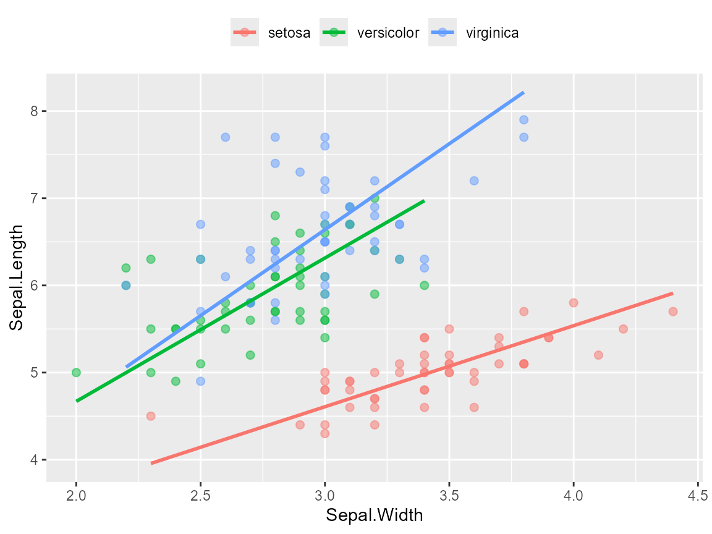
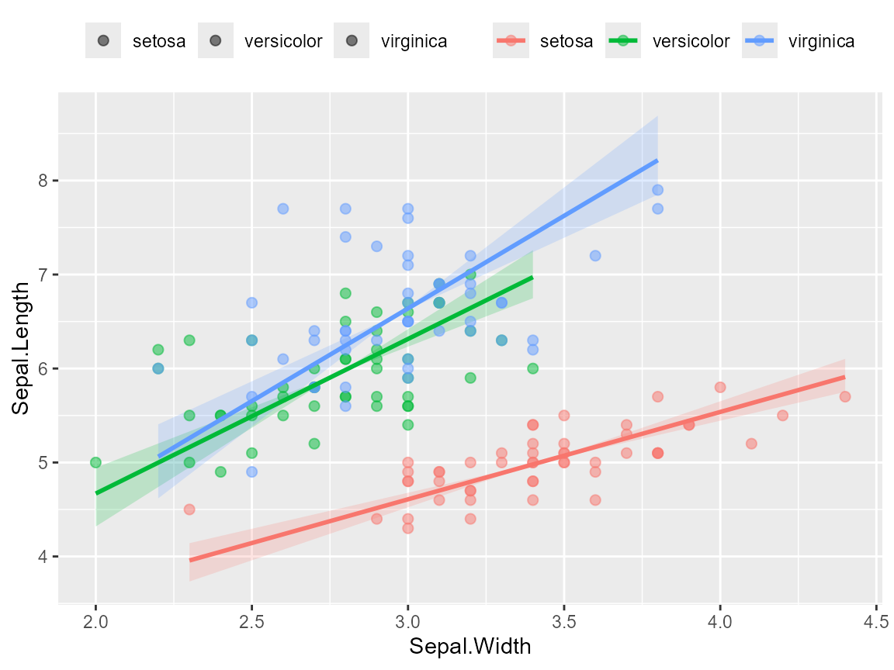

library(ggsmatr)
#>
#>
#> ##~~~~~~~~~~~~~~~~~~~~~~~~~~~~~~~~~~~~~~~~~~~~~~~~~~~~~~~~~~~~~~~~~~~~~~~~~~~~~~
#> ## ggsmatr - R package ----
#> ##~~~~~~~~~~~~~~~~~~~~~~~~~~~~~~~~~~~~~~~~~~~~~~~~~~~~~~~~~~~~~~~~~~~~~~~~~~~~~~
#>
#> El paquete ggsmatr se ha cargado con éxito. ¡Espero que lo disfrutes!
#> Email de contacto: sandoval.m@hotmail.com
#> Para citar este paquete: Mario A. Sandoval-Molina (2023). ggsmatr: a simple and efficient way to visualize the coefficients of the (Standardized) Major Axis Estimation fit. R package version 0.1.
library(ggplot2)
library(smatr)
#> Warning: package 'smatr' was built under R version 4.6.1ggsmatr: Example using the iris dataset
The presence of fitted SMA lines in a ggplot2 scatter plot can be
obtained from an object created with smatr::sma(). We first
read the example data included in the package and we fit a common-slope
SMA by group.
datafile <- system.file("iris.csv", package = "ggsmatr")
df.iris <- read.csv(datafile, encoding = "UTF-8")
fit <- sma(
Sepal.Length ~ Sepal.Width + Species,
data = df.iris,
shift = TRUE,
elev.test = TRUE,
alpha = 0.05
)
ggsmatr(
data = df.iris,
groups = "Species",
xvar = "Sepal.Width",
yvar = "Sepal.Length",
sma.fit = fit
) +
theme(legend.position = "top", legend.title = element_blank()) +
ylab("Sepal.Length") +
xlab("Sepal.Width")
#> group r2 pval
#> 1 setosa 0.551 0.000
#> 2 versicolor 0.277 0.000
#> 3 virginica 0.209 0.001
#> Warning: Using `size` aesthetic for lines was deprecated in ggplot2 3.4.0.
#> ℹ Please use `linewidth` instead.
#> ℹ The deprecated feature was likely used in the ggsmatr package.
#> Please report the issue to the authors.
#> This warning is displayed once per session.
#> Call `lifecycle::last_lifecycle_warnings()` to see where this warning was
#> generated.
Confidence ribbons for SMA slopes
Given that SMA lines pass through the group centroid, the presence of
a parametric confidence ribbon can be added with ci = TRUE.
The ribbon uses the slope confidence intervals already stored in the
sma() fit (Slope_lowCI and
Slope_highCI), and it is not related with the OLS band of
geom_smooth().
The confidence level is the one used when the model is fitted, for
example sma(..., alpha = 0.05) for 95% intervals.
ggsmatr(
data = df.iris,
groups = "Species",
xvar = "Sepal.Width",
yvar = "Sepal.Length",
sma.fit = fit,
ci = TRUE
) +
theme(legend.position = "top", legend.title = element_blank()) +
ylab("Sepal.Length") +
xlab("Sepal.Width")
#> group r2 pval Slope Slope_lowCI Slope_highCI
#> 1 setosa 0.551 0.000 0.930 0.767 1.128
#> 2 versicolor 0.277 0.000 1.645 1.288 2.100
#> 3 virginica 0.209 0.001 1.972 1.527 2.545
Transparency and smoothness of the ribbon can be controlled with
ci.alpha and n:
ggsmatr(
data = df.iris,
groups = "Species",
xvar = "Sepal.Width",
yvar = "Sepal.Length",
sma.fit = fit,
ci = TRUE,
ci.alpha = 0.15,
n = 150
)